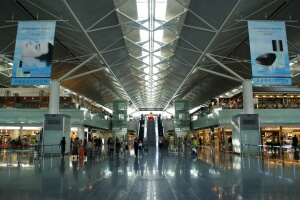
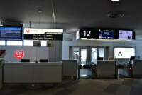
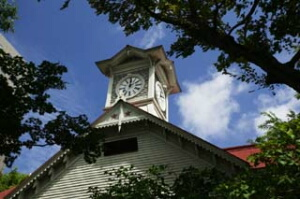
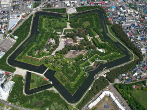
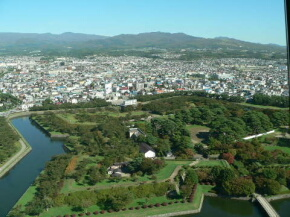
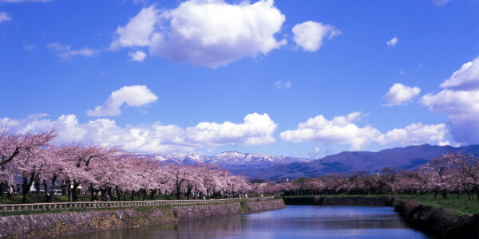
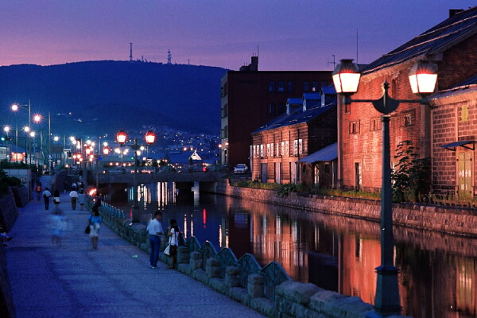
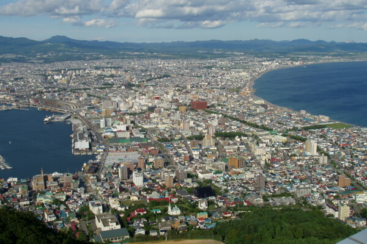
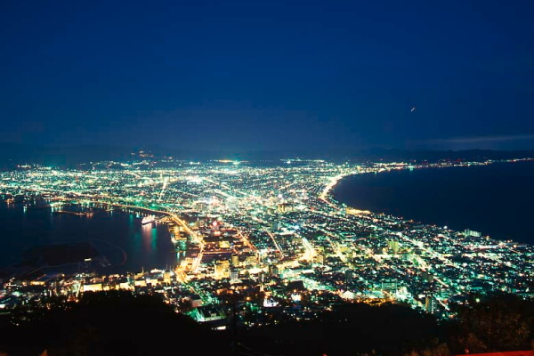

北海道探訪記
試される大地、北海道へ行ってきました！
出発はセントレアこと中部国際空港よりTakeOFF!!
|  |
新千歳空港に到着しました。少し肌寒かったです。
もう一枚上着持って行けばよかったかな??
 |
 |
| まずは札幌の時計台から．．． |  |
| かっがり観光スポットの噂はマジだった．．．。何もない | |
続いて函館の五稜郭へ移動しました。
|  |  |
| 見事な五角形ですね ちなみに桜の咲く頃になるとこんな感じらしいです。 |
|
|  | |
どうしても小樽運河に行きたかったので小樽へ移動
|  |
| すっかり日も暮れてムード満点な感じに いいですね、恋人と来たかった。 |
恋人が羨ましくなったところで函館に戻る
|
辺りがすかっり暗くなりました。函館山に登ります 函館山と言ったら夜景ですよね。まず昼の景色から見てもらいましょう。 |
|  |
| これが暗くなると・・・。 |
|  |
| どうですか？この夜景 キレイでしょ！ |
一人で夜景を見るのって辛いですね・・・。 ホテルに向かおうと思います。
|
いろいろと濃い一日でしたがどうでしたか？ ホテルの部屋はこんな感じです。 |
私はもう寝ます。おやすみなさい。